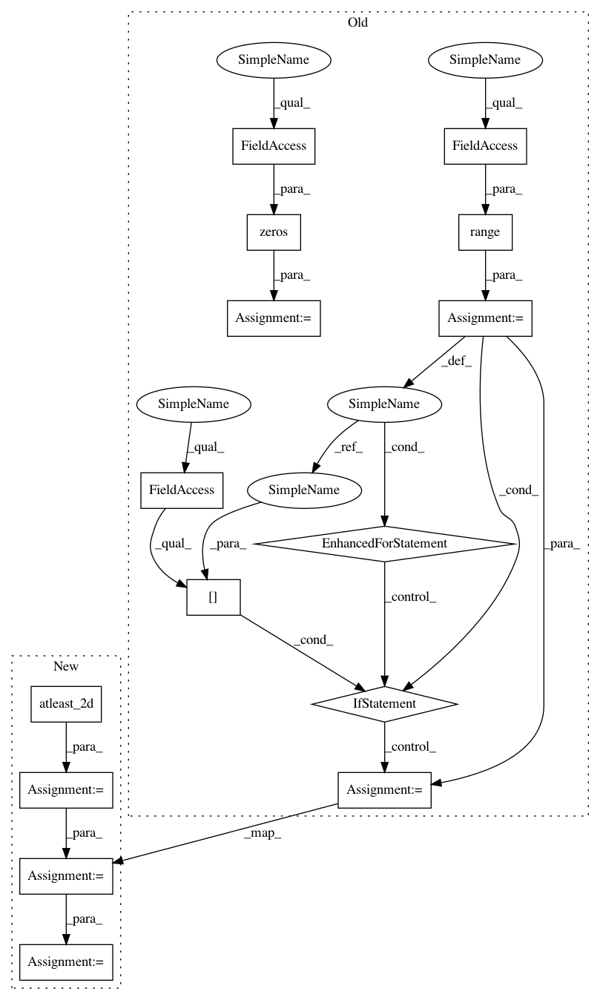

4abda80dd12518e6bfdc44d067566a3e6947e906,deslib/dcs/a_priori.py,APriori,estimate_competence,#APriori#Any#Any#,91
Before Change
dists, idx_neighbors = self._get_region_competence(query)
dists_normalized = 1.0/dists
competences = np.zeros(self.n_classifiers)
for clf_index in range(self.n_classifiers):
// Check if the dynamic frienemy pruning (DFP) should be used used
if self.DFP_mask[clf_index]:
result = np.zeros(self.k)
for counter, index in enumerate(idx_neighbors):
target = self.DSEL_target[index]
// get the post_prob for the correct class
//post_prob = self._get_scores_dsel(clf_index, index)[target]
post_prob = self.dsel_scores[index, clf_index, target]
result[counter] = (post_prob * dists_normalized[counter])
competences[clf_index] = sum(result)/sum(dists_normalized)
return competences
After Change
The competence level estimated for each base classifier
dists, idx_neighbors = self._get_region_competence(query)
idx_neighbors = np.atleast_2d(idx_neighbors)
dists = np.atleast_2d(dists)
dists_normalized = 1.0/dists
// Get the ndarray containing the scores obtained for the correct class for each neighbor (and test sample)
scores_target_class = self.dsel_scores[idx_neighbors, :, self.DSEL_target[idx_neighbors]]
// Multiply the scores obtained for the correct class to the distances of each corresponding neighbor
scores_target_class *= np.expand_dims(dists_normalized, axis=2)
// Sum the scores obtained for each neighbor and divide by the sum of all distances
competences = np.sum(scores_target_class, axis=1)/ np.sum(dists_normalized, axis=1)
// competences = np.zeros(self.n_classifiers)
// for clf_index in range(self.n_classifiers):
//
In pattern: SUPERPATTERN
Frequency: 3
Non-data size: 15
Instances
Project Name: scikit-learn-contrib/DESlib
Commit Name: 4abda80dd12518e6bfdc44d067566a3e6947e906
Time: 2018-03-28
Author: rafaelmenelau@gmail.com
File Name: deslib/dcs/a_priori.py
Class Name: APriori
Method Name: estimate_competence
Project Name: scikit-learn-contrib/DESlib
Commit Name: 44bdf9be3b913a1a0e90115e45edbee192d01b90
Time: 2018-03-31
Author: rafaelmenelau@gmail.com
File Name: deslib/des/probabilistic.py
Class Name: Probabilistic
Method Name: estimate_competence
Project Name: scikit-learn-contrib/DESlib
Commit Name: 1002cfbcc9f8182404fb058f959d625de2eabbfc
Time: 2018-03-22
Author: rafaelmenelau@gmail.com
File Name: deslib/des/knora_e.py
Class Name: KNORAE
Method Name: estimate_competence
Project Name: scikit-learn-contrib/DESlib
Commit Name: 4abda80dd12518e6bfdc44d067566a3e6947e906
Time: 2018-03-28
Author: rafaelmenelau@gmail.com
File Name: deslib/dcs/a_priori.py
Class Name: APriori
Method Name: estimate_competence